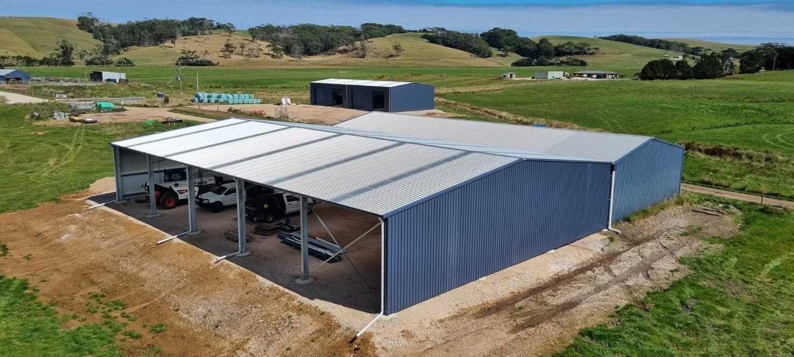

Custom Projects
Custom Sheds
For farms, dairies, industrial sites and rural properties where the shed needs to suit the land, the approvals, the access and the way the property works.
- For agricultural, livestock, machinery, storage and industrial builds
- Helpful when site preparation or council approval needs early attention
- A better fit when you want one team thinking through the whole project